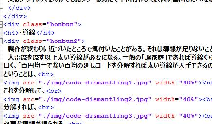

今後の電磁気電算機研究所のサイトに関して
(2024/07/17)
1.
研究対象分野の拡大
電磁気電算機研究所は名前のとおり電気回路などの「電磁気」およびコンピュータ関連の「電算機」を主に研究する予定でしたが、既にサイトの記事に現れているように数学など、他の分野の記事も書いているので、今後は数学・物理(力学含む)・化学・地学などの分野についても記事を書いていこうと思います。これに伴い、「電磁課」は電子工作などを扱う「電工課」と、電磁気以外の物理を含む「物理課」に再編します。また、主な研究対象が少し変わるかもしれませんが、サイト名の変更は予定していません。
2.
サイトの外観の簡略化
従来のウィンドウ形式のサイト表示は目次などを除いて廃止し、今後の記事はこのお知らせのような簡略化された状態で書こうと考えています。

現状ウィンドウ形式のサイトを作るときは上図のようなHTMLを直接メモ帳で編集しており、更に編集者がHTMLを理解しているのにCSSがわかっていないためソースがより複雑化していることもあり、莫大な時間がかかってしまい、思う存分に記事を書けないことが多いです。内容を重視するため、今後は外観が簡略化されますがどうか宜しくお願いします。
3.
一部仕様の変更
情報を更新した日として「情報最終電送日」を利用していましたが、これを廃止し「情報最終更新日」を利用します。あくまでもサイトを更新した日を指しアップロードした日とは限らないことをご諒承ください。
執筆:虚時間fλ
情報最終更新日:2024/07/17